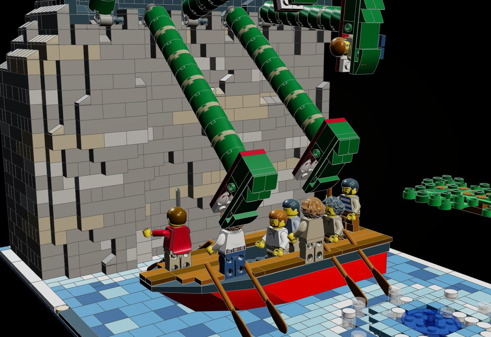
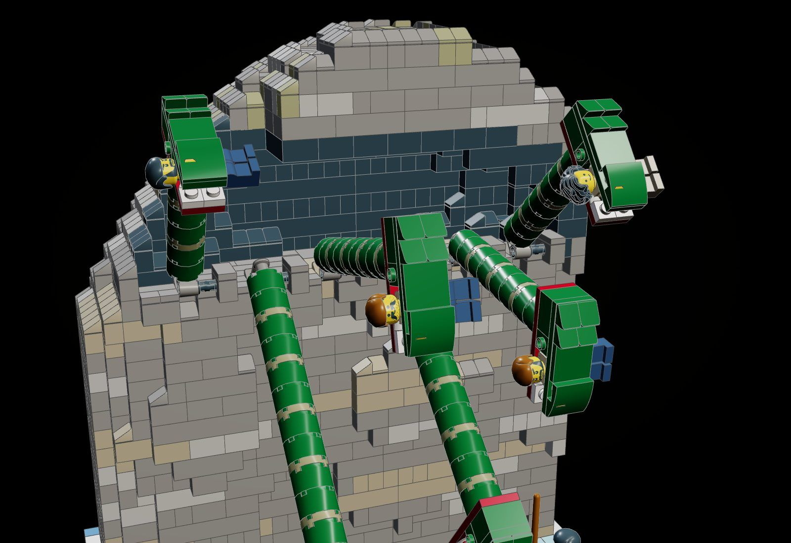
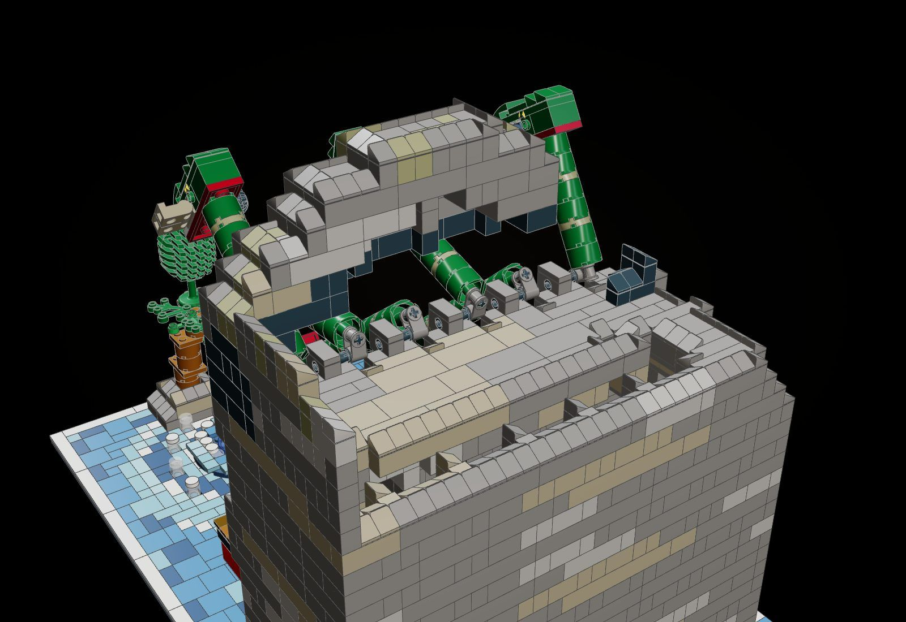
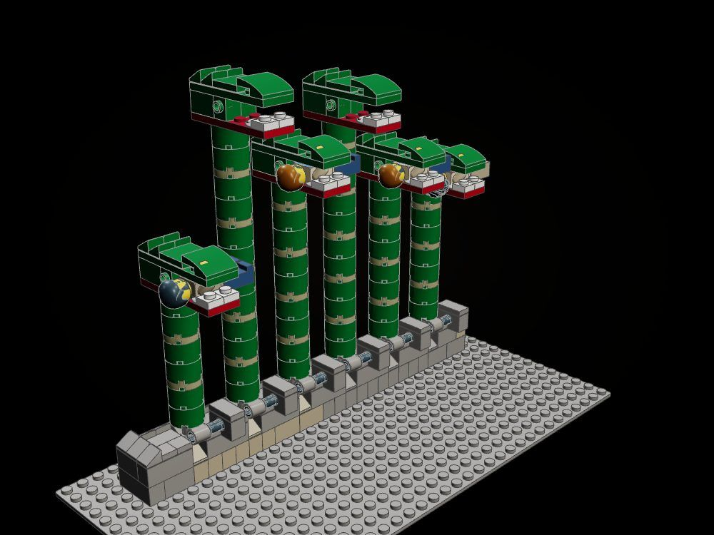
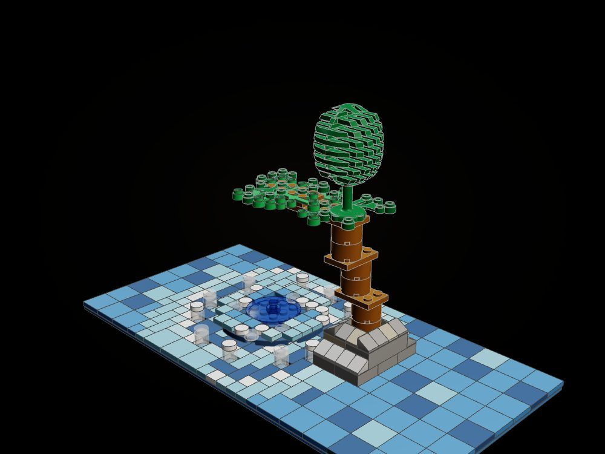
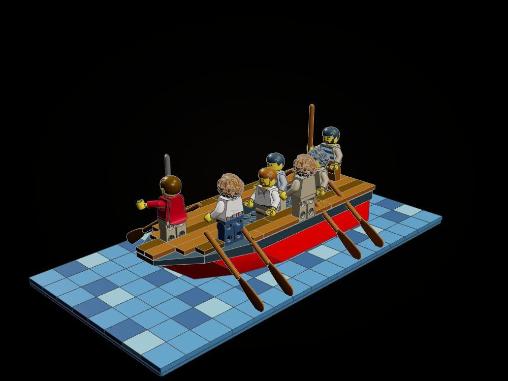

Scylla and Charybdis
The black ship rows the narrow strait: from her den high in the sheer cliff Scylla's six necks come down and snatch six men off the deck, while across the water, low under the great fig tree, Charybdis sucks the sea down.
"We looked toward Charybdis, fearing destruction; and meanwhile Scylla seized from out the hollow ship six of my comrades." (Odyssey XII, after A. T. Murray)

The object
Scylla: six necks of round bricks, each on its own friction pin in a comb of Technic bricks along the den's lip, swing down out of the dark to take a man and up again, and hold where they are left; Charybdis is a disc of foam on a real turntable that turns.



How it is built
- The cliff is sculpted in brick cells from smooth solids: it leans out over the lane and rises 29 courses (some 13 m at minifig scale), hollowed to a skin on pillars, every top finished in tiles and cheese slopes, the den a black hollow high on the face.
- Each neck is a stack of 2 x 2 round bricks on a Technic axle from a cross block; the block turns on a long friction pin through a 1 x 2 Technic brick on the den's lip, so the six necks swing one by one and stay where they are put.
- The heads are brick-built: a dark red lower jaw with two fangs, a skull of bricks with side studs for yellow eyes, an upper jaw, a curved snout and cheese-slope ears; a seized man lies across the jaws.
- Charybdis is an 8 x 8 round plate on a 4 x 4 turntable: spiral arms of round tiles and an inverted dish for the throat turn with it, while the arms of the swirl run on out into the sea of tiles and spray stands round the rim.
- The fig tree grows from a low rock on the whirlpool's edge, a trunk of round bricks jogging outward, its branch ending over the throat.
- The ship is the line's black hull afloat on the tiles, her deck planked in reddish brown; three men row in the well, the helmsman at the stern, Odysseus armed on the foredeck.
- The crown of the cliff behind the den lifts off to show the comb and the pivots.
The builds inside the build

Scylla
The six necks stand up on a ledge of rock in the comb of Technic bricks, each on its friction pin: the whole mechanism of the model.

Charybdis and the fig tree
The turntable and its disc of foam, the spray round it, the fig on its rock with its branch over the throat.

The black ship
The hull, oars and planked deck with the rowers, the helmsman, Odysseus and the two men about to be taken.
What the checker says
| Build | File | Pieces | Loose | Clashes |
|---|---|---|---|---|
| The strait (the whole kit) | set.scylla-charybdis | 2,983 | 0 | 0 |
| The crown of the cliff lifted away: the den and the six pivots | set.scylla-charybdis-open | 2,433 | 0 | 0 |
| Scylla: the six necks on their pins, standing up | set.scylla-charybdis-scylla | 345 | 0 | 0 |
| Charybdis on her turntable, and the fig tree | set.scylla-charybdis-whirlpool | 307 | 0 | 0 |
| The black ship and her crew | set.scylla-charybdis-ship | 238 | 0 | 0 |
In the film

Still to do
- The necks are straight stacks: they read as rigid tubes, not serpents; a second joint (a click hinge) at each head would let them curve.
- The six neck joints, the heads and the men in the jaws are at angles, so kitlib.check() does not see them; they were checked upright in set.scylla-charybdis-scylla and against the rock and hull by sampling points (0 points inside parts), not by the tool.
- A man lies loose across each pair of jaws (a 24 LDU gap for a 20 LDU torso); nothing clips him in.
- The whirlpool is flat: its throat is an inverted dish on the disc, not a funnel below the sea, and it is small beside the cliff.
- The fig tree is thin for "a great fig tree in full leaf"; the sea is a patchwork of 2 x 2 tiles that could use larger tiles and more movement.
- The cliff is closed at the back; a real Ideas model might open it to save parts (the budget did not require it).